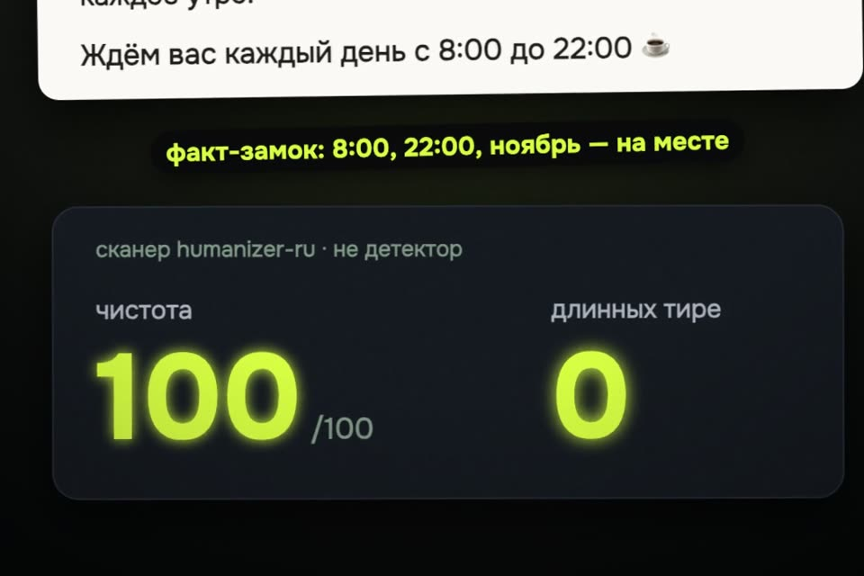

Claude пишет как человек: промпты и навык
Обещанные промпты из ролика: три сообщения в чат Claude, после которых у вас свой навык-очеловечиватель. И готовый бесплатный навык humanizer-ru, если собирать самому лень.
- бесплатно
- MIT
- 67 признаков
- сканер штампов
К ролику «Claude пишет как человек» · обновлено 28 октября 2026

Нужен аккаунт Claude. Создавать навыки в чате можно там, где в настройках включены Skills (Settings → Capabilities). Сканер не детектор нейросети: он считает штампы, а не авторство.
Свой навык за 3 промпта
Попросите очеловечивать текст
Новый чат в Claude, первое сообщение.
Очеловечивай весь мой текст, чтобы он не звучал как нейросеть.Дайте ему список признаков из Википедии
Тут же следом, в том же чате.
Страница: Википедия:Признаки сгенерированности текста. Вставьте ссылку и промпт:
Возьми страницу Википедии с признаками нейросетевого текста и составь список всех шаблонов. После этого никогда их не используй.Нумерованный список шаблонов. У нас Claude выписал 25: «играет ключевую роль», «не только…, но и…», правило трёх, жирный шрифт на каждом термине, злоупотребление длинным тире и другие. Если Claude не открывает ссылку, скопируйте текст страницы в чат целиком.
Соберите из этого навык
В том же чате: «/», выберите skill-creator (создатель навыков).
Создай навык-очеловечиватель на основе всего, что мы определили, чтобы больше ничего не объяснять.Claude создаёт навык. Дальше в любом чате пишете «/» и имя навыка перед текстом, который надо причесать.
Готовый навык вместо самодельного
humanizer-ru — бесплатный навык для русского текста, лицензия MIT: 67 признаков в каталоге, 21 жёсткий запрет, сканер с баллом чистоты 0–100 и факт-замком (сверяет числа, даты и имена до и после правки). github.com/ilyautov/humanizer-ru
Claude.ai в браузерезагрузить архив навыка
- Скачайте архив: humanizer-ru.zip.
- Claude.ai → Settings → Capabilities → Skills.
- Upload skill, выберите скачанный архив.
Не берите архив всего репозитория (archive/refs/heads/main.zip): загрузчик ждёт папку навыка в корне архива.
Claude Codeплагином или одной командой
/plugin marketplace add ilyautov/humanizer-ru
/plugin install humanizer-ru@ilyautov-pluginsИли для любого агента (Claude Code, Cursor, Codex и другие):
npx skills add ilyautov/humanizer-ruКак вызватьпромпт из нашего прогона
/humanizer-ru:humanizer-ru Очеловечь этот пост. В ответе верни только итоговый текст поста, без комментариев.В Claude.ai достаточно написать «очеловечь» или «убери канцелярит» и вставить текст: навык подхватится сам.
Сканер штампов отдельнобалл 0–100 без агента
В браузере: humanizer-ru.aifrontier.tech, вставьте текст. В терминале:
uvx ru-humanizer файл.txtЧто было в ролике: наш прогон
28 октября попросили Claude без навыков: «Напиши пост для Instagram кофейни «Зерно» про новое осеннее меню: тыквенный раф, глинтвейн без алкоголя и пирог с яблоком. Только текст поста». Потом тот же пост прогнали через humanizer-ru.
До навыка
Чистота 97 из 100, длинных тире 3: «Тыквенный раф — нежный…», «Глинтвейн без алкоголя — апельсин…», «Яблочный пирог — печём сами…».
После навыка
Чистота 100, тире 0, маркеров 0. Навык заменил тире двоеточиями и убрал одно. Факт-замок: 8:00, 22:00 и «до конца ноября» на месте.
Свежий Claude пишет пост почти чисто: правка вышла маленькой. Больше штампов бывает в длинных и официальных текстах.
Если застряли
В меню «/» нет skill-creator
Включите Skills в Settings → Capabilities. Если раздела нет, поставьте готовый humanizer-ru архивом или пользуйтесь промптами 1 и 2 в начале каждого чата.
Навык не показывает балл «Чистота: N/100»
Сканеру нужны пакеты razdel и pymorphy3. Без них навык правит текст вручную и говорит об этом. Проще всего проверить текст на сайте или командой uvx ru-humanizer файл.txt.
Чего это не гарантирует
- Детекторы мы не обманываем и не проверяли. Бесплатного детектора без входа и оплаты для такого прогона не нашли, поэтому в ролике только сканер штампов. Детекторы нейросети на русском ошибаются в обе стороны: разбор.
- Балл сканера не определяет авторство и не подтверждает, что смысл сохранён. Перечитайте текст сами.
- Цифры 97 → 100 и 3 → 0 — один наш прогон на одном посте. У вас будет по-своему.